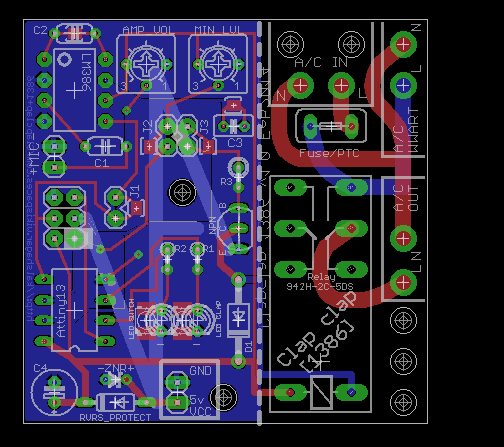
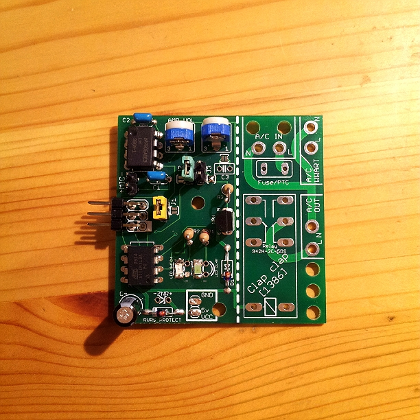

This is the ATtiny13 and LM386 version. You can check also the Clapclap 2313 which is based on ATtiny2313 and a Holtek HT82V739, or if you're really curious the original one Clapclap with ATmega328.
Changes compared to previous versions
Compared to the original
Clapclap 2313 here are the main changes:
- Components change of course :
- Attiny2313 ⇒ Attiny13 : 8 pins package, just enough, but needs a few jumpers if you want to program it (see below)
- HT82V739 ⇒ LM386 : easier to source over the world but requires a few additional caps
- Added reverse polarity protection on 5v VCC (can bypass, just put a wire)
- Added a cheap Zener diode voltage ref to protect from overvoltage (can be ignored, leave open)
- Added a fuse/resettable fuse on the HOT side (can bypass, just put a wire)
- Larger trace for main but still keeping distance between traces (can drive more power more safely, still keep it under 100W)
- Leds can be SMD leds instead (both through hole and SMD are available)
- Microphone is now on the farthest side of the main, to minimize the EMI
- Adjustment potentiometers are on the side of the board, easier to adjust if you put vertical potentiometers
- NPN transistor pinout on the board (E-C-B), easier to identify equivalent part
What's inside / Parts list
- ATtiny13
- LM386 opamp
- A electret microphone
- A relay (my case 5v that drives up to 5A/220V)
- A NPN transistor to drive the relay ２ＳＣ２１２０－Ｙ
- Can be replaced by any NPN transistor with pinout [E-C-B] (front view, left to right)
- A flyback diode and a few reverse polarity diodes
- A few resistors, caps, potentiometers,...
- C1 : 1uF
- C2 : >= 1uF
- C3 : >= 0.1uF (optional cap, just leave open is ok)
- C4 : >= 4.7uF power rail stabilizer, can go as big as 470uF no problem (optional cap but strongly recommended)
- R1,R2 : 100ohm-1kOhm to limit current for the leds
Assembly
By default you should program your
Attiny13 and then put it into its IC socket, and you're done.
No programming after assembly
If you don't plan to program the
Attiny13 after you put it in the board:
- Solder (close) all the surface mount jumpers J1, J2 and J3
- No need to fill the ISP programmer or the jumpers J1, J2 and J3
Programming after assembly
You put everything into place, and then you decide to change the timing of claps, or you want 3 on the row, or you want to make an auto-turn off ... whatever, you want to change the code, and you want to do it on the board ('cause you're cheap like me and you skipped the IC socket). How do you do that ?
- Open the SMD jumpers J1 and J2 if you closed them (a piece of solder wick and iron and you're done)
- J3 can be left closed or soldered
- Solder the ISP programmer and the jumpers J1, J2 and J3
- Plug your programmer on the ISP and remove the jumper J1-J2-J3 if any
- Do the programming magic
- In order for the circuit to work you must close the jumpers J1-J2-J3 (permamently by soldering the SMD or temporarily by puting a jumper on the connector)
Putting and removing the jumpers is a pain in the neck, but that's the price to pay of having a small micro controller, I had to share pins for many functions. Is there a better way to design this ? I'd be happy to hear that so please teach me.
Code
Google code
http://code.google.com/p/alanarduinotools/source/browse/trunk/#trunk%2FAttiny13%2FClapclap1386
- It's a AVR Studio 6 project, but you can easily adapt it to the tool of your choice I'm sure
Board
Google code
http://code.google.com/p/alanarduinotools/source/browse/trunk/#trunk%2Feagle%2FClapclap2313
- Look at files Clapclap1386.*
Points of interrest
- Compared to the Clapclap2313 version, a generous part of the code was rewritten, such as the general logic of the program.
- All the job is done with interrupts, main code is just an empty loop:
- One interrupt counts hundredth of seconds and keep a rough idea of time passing (so it can validate that 2 claps happen in the predefined timespan)
- One interrupt is triggered when the comparator detects that the mic input (post amplification) goes higher than reference voltage (MIN_LVL potentiometer) and saves the clap time
Pictures

Board assembled without the relay though. Working fine, just J1 and J2 needed to program it.